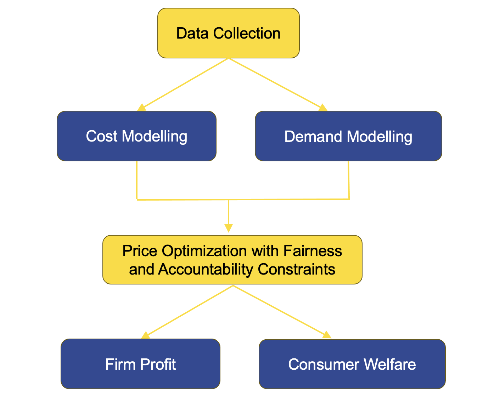

Step 3: Assess impact
A practical framework for fair algorithmic pricing
Who gains and loses?
Steps 1 and 2 focus on the model: what it predicts and how it treats different groups at the point of estimation. Step 3 asks a different question. Once fair predicted costs leave the model and enter the market, who actually benefits and who ends up worse off?
The distinction matters because insurance prices are not simply the output of a cost model. They also reflect demand, competition, customer behaviour, and the insurer’s commercial objectives. A pricing system that achieves cost-level fairness can still produce unfair market outcomes if the firm’s pricing strategy shifts the burden in ways the fairness constraint was not designed to catch.
Consider a simple example. An insurer builds a model that produces equal average predicted costs for two groups. It then applies a price optimisation layer that raises prices for customers who are likely to renew regardless of cost. If one protected group is disproportionately represented among those low-switching customers, perhaps because of fewer alternatives in their local market or lower financial literacy, the final premiums will be higher for that group even though the cost model was fair. The fairness constraint was applied at the wrong stage of the pipeline. It addressed the model but not the market outcome.
This step asks you to trace the impact of pricing decisions through to the customer, measuring welfare and profit by protected group rather than stopping at whether predicted costs are equal.
What is price optimisation?
Technical prices in insurance are built on expected claim cost: the amount the insurer expects to pay on a policy over its term. Actuaries estimate this cost using the kind of models described in Step 2, and the premium is typically set close to that estimate plus a margin for expenses and capital.
Price optimisation goes further. It incorporates a model of customer demand: how likely each customer is to buy, renew, or leave in response to a price change. An insurer that can predict which customers are price-sensitive and which are price-insensitive can adjust premiums accordingly, maximising revenue or profit rather than simply recovering expected cost. Customers predicted to be loyal and unresponsive to price increases are charged more. Customers predicted to be price-sensitive and likely to shop around are charged less, or offered discounts at renewal.
This technique is common in retail and travel. In insurance it is more contentious. Around 20 US states have restricted or banned price optimisation in personal lines products since 2015, on the grounds that it creates price differences between customers with identical risks, and that the customers who bear the highest markups (the difference between what they pay and their expected claim cost) tend to be those with fewer choices and less market power (NAIC CAS Task Force 2015; Consumer Federation of America 2014). In the UK, the Financial Conduct Authority banned insurers from charging higher renewal prices than those offered to risk-identical new customers, effective from 1 January 2022, on similar grounds (FCA 2021). Both restrictions target non-risk pricing, though the UK ban specifically targets the renewal channel. If price sensitivity correlates with income, location, or other characteristics associated with protected groups, optimising on price sensitivity can reproduce group-level disparities through a channel that looks entirely neutral from a cost-modelling perspective.
This is why welfare analysis in Step 3 matters even when Step 2 produces a well-designed fair cost model. The model is only the beginning of the pricing pipeline.
The full pricing process
Huang and Shimao (2026) models the complete pipeline from cost estimation to market outcome.

| Stage | Role |
|---|---|
| Cost modelling | Expected claim cost (input to pricing) |
| Demand modelling | Customer’s willingness to pay and sensitivity to price |
| Price optimisation | Offered price in the market, incorporating demand and competitive position |
| Regulatory constraints | Fairness and accountability rules applied to the final price |
Cost modelling is the domain of Step 2. Demand modelling requires data on how customers respond to price offers, which may come from renewal databases, quote conversion rates, or surveys. Price optimisation combines the two to set a price for each customer. Regulatory constraints then apply rules to what that price can look like, which is the focus of the pricing rules in this step.
The welfare outcome for any customer is the difference between their willingness to pay and the price they are actually charged. For the insurer, the profit outcome is the difference between the price charged and the expected cost. Fairness analysis asks whether these quantities differ systematically across protected groups, and whether the regulatory rule chosen narrows or widens those differences.
Five pricing rules and who wins under each
Huang and Shimao (2026) compares five distinct approaches to price-setting and measures their effects on consumer welfare and firm profit by protected group. The table below summarises each rule.
| Rule | Plain language | Regulatory idea |
|---|---|---|
| P0 | Unconstrained profit maximisation | Benchmark: prices set to maximise expected profit, incorporating demand models |
| PA | Accountable pricing | Transparent base rate and explicit relativities for each rating factor |
| POB | Price optimisation ban | Premium tied closely to estimated cost; demand-based markups restricted |
| PDP | Demographic parity on premiums | Equal average premiums across protected groups |
| PAF | Group fairness on cost estimates | Equal premiums across groups within each cost stratum |
P0: The unconstrained benchmark. The insurer maximises expected profit, charging each customer based on expected cost and predicted price sensitivity. No fairness constraint applies. This produces the widest disparities between groups and the highest average profit for the insurer. It is the baseline against which all constrained rules are compared.
Accountable pricing (PA). This requires a transparent, decomposable rating structure: a base rate plus explicit relativities for each factor, similar to how most traditional filed rate plans work (rate structures submitted to and approved by state insurance regulators) (NAIC CAS Task Force 2015; NAIC 2012). The insurer cannot add a hidden demand-based surcharge on top of the filed rate. PA limits the ability to exploit information asymmetries but does not directly constrain group-level outcomes. The empirical results in Huang, Shimao, and Khern-am-nuai (2026) find that PA nearly eliminates the markup gap between genders, reducing the female-to-male markup ratio from 1.21 under unconstrained pricing to 1.07 (a ratio above 1.0 means females are paying more in markup per unit of expected cost than males; 1.21 means 21 per cent more), because the accountability requirement prevents fine-tuned individual exploitation. This improvement comes at a substantial profit cost. In voluntary insurance markets, the insurer’s profit falls by around 42 per cent under PA, making the fairness gain expensive from the insurer’s perspective.
Price optimisation ban (POB). POB requires that premiums track estimated cost closely, restricting the insurer from adding demand-based markups. The effect on group disparities depends on market structure. In voluntary markets with active competition, POB tends to benefit groups that were previously paying inflated renewal premiums. In mandatory markets where customers cannot easily leave, the dynamics differ and POB’s benefits are less predictable. Across the scenarios studied in Huang and Shimao (2026), POB produces moderate profit losses of around 5 to 8 per cent.
Demographic parity on premiums (PDP). PDP directly constrains average premiums to be equal across protected groups (Xin and Huang 2023). It is the most direct regulatory response to an observed price gap. It works at the price level, not the cost level, which creates a structural tension described in the next section. Community rating schemes in some jurisdictions apply similar logic: private health insurance in Australia and compulsory third-party auto insurance in the Australian Capital Territory both mandate price parity across risk groups (Commonwealth of Australia 2021). The research finds that while PDP achieves near-perfect price equality, it substantially widens the markup gap, raising the female-to-male markup ratio from 1.21 to 1.66 in the baseline market. In the empirical study, females experience welfare losses under PDP even as their prices become equal to males, because the insurer compensates for the price constraint by extracting more profit from the lower-cost group.
Group fairness on cost estimates (PAF). Rather than equalising average premiums across groups, PAF requires that within each cost stratum (customers grouped by their estimated claim cost level), customers from different groups receive the same premium (Dolman and Semenovich 2018, 2019). This is tighter than PDP in some respects (it controls for risk level) and looser in others (it does not constrain the overall average). The research suggests PAF performs better than PDP on markup fairness for some market structures, at a comparable cost to firm profit, though females can still face welfare losses under PAF where markup differentials remain.
The price-fairness and markup-fairness tension
One of the most important findings of this research is that price fairness and markup fairness pull in opposite directions, and no single pricing rule achieves both at once.
Price fairness means that two groups are charged similar premiums on average. Markup fairness means that two groups are charged a similar margin above their expected claim cost. If the groups have genuinely different expected costs (which is common in motor or health insurance), you cannot achieve both simultaneously.
To see why, consider a simple illustration. Group A has an expected cost of 800 and Group B has an expected cost of 1,000. A regulation that requires equal premiums might set the price at 900 for both. Group A now pays a markup of 100 above their expected cost. Group B pays 100 below theirs. The price gap has been closed. A markup gap has opened. The insurer is effectively cross-subsidising Group B using premiums from Group A.
The PDP rule in Huang and Shimao (2026) achieves exactly this. It closes the premium gap between groups but widens the markup gap. Whether that cross-subsidy is acceptable is not a statistical question. It is a question about whether insurance for this product is being treated as a commercial product (in which case actuarial fairness says each group should pay its own expected cost) or as something closer to a social service (in which case some cross-subsidy is appropriate). That conversation belongs in Step 1, before the model is built and before a pricing rule is chosen.
Key findings from the research
Huang, Shimao, and Khern-am-nuai (2026) and Huang and Shimao (2026) together produce four findings that should inform welfare analysis in practice.
First, interventions at the cost-modelling stage can alter final prices even when their effect on model accuracy is modest. The pathway from a fairness constraint to a market price runs through demand and optimisation, and the amplification or attenuation along that path depends on the product and market.
Second, standard fairness metrics can reduce welfare for protected groups after accounting for selection effects. When a pricing rule changes who participates in the insurance market (because some customers find the price too high and drop out), the welfare calculation changes. A rule that equalises premiums for those who buy may still disadvantage the group with the lowest participation rate, because those who cannot afford to participate receive no benefit.
Third, firm and consumer welfare respond differently to each pricing rule. PA tends to reduce markup disparities with moderate profit loss. POB has market-structure-dependent effects. PDP closes price gaps but widens markup gaps. No rule dominates on all dimensions simultaneously.
Fourth, the results depend on whether the market is voluntary or mandatory. In mandatory motor insurance markets, customers cannot exit, which changes how price optimisation operates and which regulatory interventions are most effective.
Fifth, when fairness rules apply industry-wide rather than to a single firm, the welfare consequences for protected groups are substantially amplified. A consumer who faces a fairness-induced price distortion at one insurer can no longer escape by switching to an unregulated competitor. In Huang, Shimao, and Khern-am-nuai (2026), the welfare loss for female consumers under a fairness-unawareness rule is roughly eight times larger when all insurers face the same constraint than when only one does. Regulators considering mandatory industry-wide mandates should account for this amplification, particularly in markets where consumers have limited outside options.
Measures
Report the following quantities by protected group before proceeding to the audit in Step 4.
| Measure | Definition |
|---|---|
| Consumer welfare | Willingness to pay minus price paid. Positive means the customer values the product more than they pay for it |
| Firm profit | Price charged minus expected claim cost. Higher than zero means the insurer earns a margin on this customer |
| Price gap | Difference in average premiums between protected groups |
| Markup gap | Difference in average markup between protected groups |
| Participation rate | Share of each group that purchases or renews. Welfare measures only capture those who participate |
Checklist
Use this checklist to document welfare findings before auditing. Assign an owner for each item and record sign-off.
| Task | Typical owner |
|---|---|
| Welfare memo with firm profit and consumer welfare by group | Actuarial and economics |
| Price gap and markup gap both reported and distinguished | Product and policy |
| Market structure documented (mandatory cover, competition, distribution channel) | Product and strategy |
| Participation rates by group documented | Actuarial |
| Trade-offs linked to Step 4 monitoring plan | Model risk and compliance |